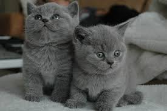
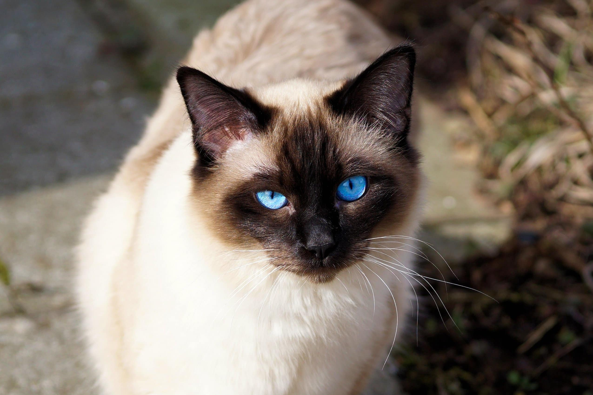
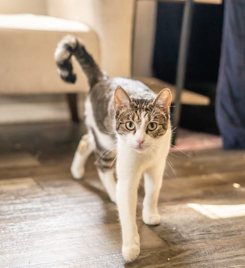

Cats are one of the most beloved domesticated animals in the world. With their independent nature, graceful movements, and affectionate personalities, cats have captivated human hearts for thousands of years. Whether lounging in sunny windows or playfully pouncing on toys, cats bring joy and companionship to millions of households across the globe.
The domesticated cat is believed to have descended from the African wildcat and has evolved alongside humans, adapting to various environments and lifestyles. Today, cats are known for their incredible hunting instincts, their unique vocalizations, and their uncanny ability to sense human emotions and provide comfort when needed most.

Cats possess remarkable physical and behavioral characteristics that set them apart from other animals. They have flexible spines, excellent night vision, and powerful senses that allow them to navigate their environment with precision and grace. Their keen hearing can detect frequencies up to 64,000 Hz, far beyond what human ears can perceive.
